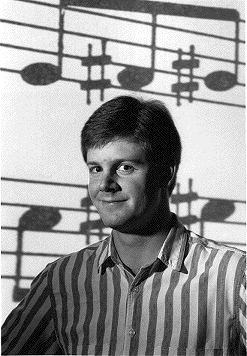
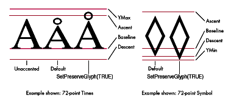
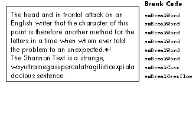
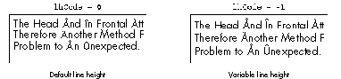

NeoTextBox is an alternative to the TextEdit utility routine TextBox. NeoTextBox
provides full-justification capability and the option to use TrueType features while
retaining all the advantages of TextBox. The three routines that comprise NeoTextBox
compile to fewer than 900 bytes yet offer a 40% performance increase over TextBox
in common cases.
In the deepest, darkest corner of the TextEdit chapter inInside Macintosh Volume I,
there's an extremely useful routine called TextBox.
pascal void TextBox(void *text, long length, Rect *box, short just)
Given a rectangle and some text, TextBox word wraps the text inside the rectangle,
drawing in the font, style, and size specified in the current grafPort.
Anyone who's tried to word wrap text knows that it's not as easy as it first appears.
Perhaps that's why TextBox takes the approach it does: to perform its task, TextBox
creates a new TERec with TENew, sets up the rectangles in the record, and calls
TESetText to create a temporary handle to a copy of the text you provided to TextBox.
TextBox then calls TEUpdate to wrap and draw the text, and finally TEDispose to
dispose of the TERec. By calling TextEdit to do the text wrapping and drawing, TextBox
avoids doing any hard work. Unfortunately, it also incurs quite a bit of overhead.
Despite its pass-the-buck implementation, TextBox's use of TextEdit has several
advantages. Perhaps most important, TextBox works correctly with non-Roman script
systems like Japanese and Arabic without the need for any extra programming.
Another handy side effect is that updates in TextEdit degenerate into calls to DrawText,
and can therefore be recorded into QuickDraw pictures. TextBox was designed
specifically for drawing static text items in dialog boxes and performs this function
well.
So TextBox is great--if you're drawing dialog boxes. But you want more. You want
better performance. You want more flexibility. You want to control line height. You
want full justification (instead of only left, center, and right alignment). You want to
use whizzy TrueType calls when they're available. You want to control the text drawing
mode. You can't stand the way TextBox always erases (and therefore isn't too useful
when you're drawing to printers--it slows printing way down). Yeah, and you don't
like that 32K text limitation either. You want to word wrapWar and Peace in a single
call to TextBox. And you'd like some useful information back, too, like the line height it
used, and where the last line of text was drawn, so that you can draw something below
the text. And, of course, you want to retain the advantages of TextBox.
Well, this is your lucky day.
NeoTextBox is the TextBox you've always wanted (and didn't even have to ask for).
NeoTextBox is on the average 33% faster than an equivalent call to TextBox. Plus, it's
considerably more flexible:
NeoTextBox gives you all this extra functionality, yet retains the advantages of
TextBox. It is completely language independent and uses the Script Manager heavily
(just like TextEdit). It's easy to call, and if you don't want all the spiffy new features,
it's easy to get TextBox-like behavior with a free performance increase.
Let's take a look at the parameters for NeoTextBox.
short NeoTextBox(unsigned char *theText, unsigned long textLen,
Rect *wrapBox, short align, short lhCode, short *endY,
short *lhUsed)
The first two parameters, theText and textLen, are analogous to TextBox's text and
length parameters: they specify the text to be wrapped. Note that theText isn't a Pascal
string--it's a pointer to the first printable character.
The third and fourth parameters, wrapBox (box in TextBox) and align, also hearken
back to NeoTextBox's ancestor. Just as in TextBox, wrapBox specifies the rectangle
within which you're wrapping text, and the align parameter specifies the alignment. In
addition to the standard TextEdit alignments teFlushLeft, teCenter, and teFlushRight
(see "Text Alignment Constants for System 7"), a new alignment is
defined--ntbJustFull. It performs full justification in whatever manner is
appropriate for the current script.
The fifth parameter, lhCode, specifies how the line height is derived. If lhCode is 0, the
default line height is derived via a call to GetFontInfo. This gives the same behavior as
TextBox. If lhCode is less than 0, the line height is derived by determining which
characters in the text that's being drawn extend the most above and below the baseline
(see "SetPreserveGlyph With TrueType Fonts"). Finally, if lhCode is greater than 0,
the value of lhCode itself specifies the line height. For instance, you can draw
12-point text in 16-point lines.
The last two parameters, endY and lhUsed, are reference parameters that allow you to
retrieve the vertical position of the last line of text and the line height that was used to
draw the text, respectively. The endY parameter can be very useful if you intend to
draw anything below the text, since it tells you exactly where the last line of text was
drawn. To find out what the actual derived line height was if you used a negative lhCode,
use the lhUsed parameter. Pass nil for either or both of these last two parameters if
you don't want this extra information.
NeoTextBox returns thetotal number of lines in the text. That includes lines clipped
off because they were below the bottom of wrapBox. You can tell whether the text
overflowed wrapBox by whether the value returned in endY is greater than
wrapBox.bottom. If you want to know how many lines fit in wrapBox, simply divide the
height of wrapBox by the value returned in lhUsed.
Before System 7, there was a conflict between the names of the text alignment
constants and their actual behavior. To help make applications compatible with
non-Roman scripts, teJustLeft was interpreted as the default text alignment
appropriate for the current script rather than forcing text to be aligned on the left as
specified. For example, on a Hebrew system, a TextBox call with a just parameter of
teJustLeft would actually use the default justification for Hebrew, which is
teJustRight.
To overcome this conflict, new constants were introduced in System 7, as shown in
Table 1.
Table 1 Text Alignment Constants
| New Constant | Old Constant | Value | Meaning |
| teFlushLeft | teForceLeft | -2 | Align text on the left for all scripts |
| teFlushRight | teJustRight | -1 | Align text on the right for all scripts |
| teFlushDefault | teJustLeft | 0 | Use conventional alignment for script |
| teCenter | teJustCenter | 1 | Center text for all scripts |
Before TrueType, all characters in all fonts fit beneath the font's ascent line and above
the descent line, like the default characters shown in Figure 1. Bitmapped fonts were
drawn so that diacriticals, like the angstrom over the A in Ångström,
would fit beneath the ascent line. To do this, the letterform had to be distorted. With
the advent of TrueType, this "feature" can be controlled, because TrueType fonts carry
outline data that's true to the original design (hence the name TrueType).
Since most applications expect characters to fit beneath the ascent line and above the
descent line, QuickDraw transforms characters in TrueType fonts to force them within
those bounds. To override this transformation and preserve the original glyph shape,
use the Font Manager call SetPreserveGlyph(TRUE). After this call, TrueType fonts
will be drawn as shown to the right in Figure 1. Preserving the glyph shape makes it
possible to take advantage of NeoTextBox's variable line height feature.

Figure 1 How SetPreserveGlyph Affects Line Height
NeoTextBox uses some advanced Script Manager routines that are available only in
System 6 or later. NeoTextBox assumes they're available, so make sure your main
program checks that it's running on System 6 or later via a Gestalt or SysEnvirons
call.
NeoTextBox requires one global variable, a Boolean named gHasTrueType. It should be
set to TRUE if the TrueType trap ($A854) is available, or FALSE if not. If your
development environment provides glue for Gestalt, you can use the following lines to
set up gHasTrueType:
#define kTrueTypeTrap 0x54 /* The TrueType trap number */
#define kUnimplTrap 0x9f /* The "unimplemented" trap number */
long gResponse;
if (Gestalt(gestaltFontMgrAttr,&gResponse) == noErr)
gHasTrueType = BitTst(&gResponse,31-gestaltOutlineFonts);
else {
gHasTrueType = (NGetTrapAddress(kTrueTypeTrap,ToolTrap) !=
NGetTrapAddress(kUnimplTrap,ToolTrap));
}
NeoTextBox does a lot. But, in order to appease the programmer's natural desire to
avoid work, we allow the Script Manager to do the hard parts. (Do you know how to do
full justification in Arabic?) In short, here's how NeoTextBox gets its job done:
It sounds simple, doesn't it? That's because StyledLineBreak does all the work. It
knows how to find word breaks in whatever script we're using. StyledLineBreak is
smart, too. For instance, in English, it knows that it's OK to break a hyphenated word
if necessary. It uses rules that are provided by the installed script systems, so it
always takes the appropriate actions. Let's take a closer look at the code.
The source code for NeoTextBox that's shown here is written in MPW C 3.2. We'll start
in the NeoTextBox function and break out to a couple of utility functions when we come
upon them.
Here's the NeoTextBox declaration and local variables:
short NeoTextBox(unsigned char *theText, unsigned long textLen,
Rect *wrapBox, short align, short lhCode, short *endY,
short *lhUsed)
{
RgnHandle oldClip; /* Saved clipping region */
StyledLineBreakCode breakCode; /* From StyledLineBreak */
Fixed fixedMax; /* boxWidth in fixed point */
Fixed wrapWid; /* Width to wrap within */
short boxWidth; /* Width of box */
long lineBytes; /* Number of bytes in one line */
unsigned short lineHeight; /* Calculated line height */
short curY; /* Current vert pen location */
unsigned short lineCount; /* Number of lines we've drawn */
long textRemaining;
/* Number of bytes of text left */
unsigned char *lineStart; /* Pointer to start of a line */
unsigned char *textEnd; /* Pointer to end of input text */
Many of these variables are used in the call to StyledLineBreak, which is explained in
detail later. The most important variables to know about here are breakCode, which
contains the line break code returned by each call to StyledLineBreak; lineStart and
lineBytes, which are returned by StyledLineBreak to specify a single line; and curY,
the current vertical pen location.
GET READY
NeoTextBox, like TextBox, clips to wrapBox. Since this is a general-purpose routine,
it's safest to save the clipping region, then restore it at the end. We calculate the width
of wrapBox, because it's used a lot, and convert it to fixed point as fixedMax, which is
used in calls to StyledLineBreak as a VAR parameter. Also, we retrieve the appropriate
text alignment if the user has requested default alignment.
GetClip((oldClip = NewRgn()));
ClipRect(wrapBox);
boxWidth = wrapBox->right - wrapBox->left;
fixedMax = Long2Fix((long)boxWidth);
if (align == teFlushDefault)
align = GetSysJust();
DETERMINE THE LINE HEIGHT
Now we need to determine the appropriate line height. NeoTextBox calls NTBLineHeight
to perform this function, passing the text pointer, the text length, the wrap rectangle,
the caller- specified line height code, and the address of curY, the current vertical pen
location. NTBLineHeight calculates and returns the line height and calculates the
correct starting pen location. Here's the NTBLineHeight function:
unsigned short NTBLineHeight(unsigned char *theText,
unsigned long textLen, Rect *wrapBox, short lhCode, short *startY)
{
short asc, desc;
FontInfo fInfo;
Point frac;
unsigned short lineHeight;
GetFontInfo(&fInfo);
if (lhCode < 0) {
/* lhCode < 0 means "variable line height", so if it's a */
/* TrueType font use OutlineMetrics, otherwise use default. */
frac.h = frac.v = 1;
if (gHasTrueType && IsOutline(frac, frac)) {
OutlineMetrics((short)textLen, theText, frac, frac, &asc,
&desc, nil, nil, nil);
lineHeight = MAXOF(fInfo.ascent, asc)
+ MAXOF(fInfo.descent, -desc) + fInfo.leading;
*startY = wrapBox->top + MAXOF(fInfo.ascent, asc)
+ fInfo.leading;
} else {
/* Punt to "default" if we can't use TrueType. */
lineHeight = fInfo.ascent + fInfo.descent + fInfo.leading;
*startY = wrapBox->top + fInfo.ascent + fInfo.leading;
}
} else if (lhCode == 0) {
/* lhCode == 0 means "default line height." */
lineHeight = fInfo.ascent + fInfo.descent + fInfo.leading;
*startY = wrapBox->top + fInfo.ascent + fInfo.leading;
} else {
/* lhCode > 0 means "use this line height" so we */
/* trust 'em. */
lineHeight = lhCode;
*startY = wrapBox->top + lhCode + fInfo.leading;
}
return(lineHeight);
}
Remember, there are three possible line height codes:
Each of the three line height calculation methods also figures the correct startY based
on the line height and wrapBox->top.
Back in NeoTextBox, we call NTBLineHeight to set up our local variables lineHeight and
curY:
lineHeight = NTBLineHeight(theText, textLen, wrapBox, lhCode, &curY); lineCount = 0; lineStart = theText; textEnd = theText + textLen; textRemaining = textLen;
Here we also set up some other local variables. The variable lineCount records the
number of lines we've drawn. The pointer lineStart points to the beginning of the
current line, which initially is the beginning of the text. The variable textEnd is a
pointer to just beyond the end of the input text and is used for testing when the text is
all used up. Finally, the variable textRemaining keeps track of how many bytes of
input text remain to be processed.
THE BREAK-DRAW LOOP
Now NeoTextBox is ready to break lines and draw the text. This task is performed by
the following do-while loop:
do {
lineBytes = 1;
wrapWid = fixedMax;
breakCode = StyledLineBreak(lineStart, textRemaining, 0,
textRemaining, 0, &wrapWid, &lineBytes);
NTBDraw(breakCode, lineStart, lineBytes, wrapBox, align, curY,
boxWidth);
curY += lineHeight;
lineStart += lineBytes;
textRemaining -= lineBytes;
lineCount++;
} while (lineStart < textEnd);
If this looks simple, that's because it is. Anyone who's tried to write code to wrap text
knows that it's a difficult task. Making the algorithm compatible with different script
systems complicates the matter even more. Fortunately, we have the Script Manager,
which in this case makes our lives alot easier.
The workhorse: StyledLineBreak. First we set lineBytes to 1, signaling to
StyledLineBreak that this is the first "script run" on this line. Since we have only one
script run, we always reset lineBytes at the top of the loop. Also, we reset wrapWid to
be fixedMax (which was previously initialized to the fixed- point width of the wrap
rectangle). WrapWid tells StyledLineBreak the width within which to wrap the text
and returns how much of the line is left (if any) after wrapping (that's why we have
to reset it at the top of the loop each time).
Now we call StyledLineBreak. We provide a pointer to the beginning of the text for this
line, the number of bytes of text remaining, the wrap width, and the address of a
variable where StyledLineBreak puts the number of bytes in this line.
StyledLineBreak does the hard work of finding word boundaries, adding up character
widths, and handling special cases, all in an internationally compatible way.
After StyledLineBreak returns, lineBytes tells us the length of the current line
beginning at lineStart, and breakCode has a line break code that tells us the
circumstances of the line break, as shown in Figure 2.

Figure 2 Line Break Codes
Usually, StyledLineBreak returns smBreakWord, indicating that it broke the line on a
word boundary. The break code smBreakChar says that it encountered a word that was
too long to fit on a single line and was forced to break in the middle of a word.
StyledLineBreak returns smBreakOverflow if you run out of text before filling the
given width. These line break codes help determine how to draw the text.
Draw the text with NTBDraw. After StyledLineBreak figures the length of the
line, NeoTextBox calls NTBDraw to draw the line. NeoTextBox passes a pointer to the
line of text, the length of the line in bytes, the wrap rectangle, the alignment, the
current vertical pen location, and the width of the wrap rectangle. Let's take a look at
NTBDraw:
#define kReturnChar 0x0d
void NTBDraw(StyledLineBreakCode breakCode, unsigned char *lineStart,
long lineBytes, Rect *wrapBox, short align, short curY,
short boxWidth)
{
unsigned long blackLen; /* Length of non-white characters */
short slop; /* Number of pixels of slop for */
/* full justification */
blackLen = VisibleLength(lineStart, lineBytes);
if (align == ntbJustFull) {
slop = boxWidth - TextWidth(lineStart, 0, blackLen);
MoveTo(wrapBox->left, curY);
if (breakCode == smBreakOverflow ||
*(lineStart + (lineBytes - 1)) == kReturnChar)
align = GetSysJust();
else DrawJust(lineStart, blackLen, slop);
}
switch(align) {
case teFlushLeft:
case teFlushDefault:
MoveTo(wrapBox->left, curY);
break;
case teFlushRight:
MoveTo(wrapBox->right - TextWidth(lineStart, 0,
blackLen), curY);
break;
case teCenter:
MoveTo(wrapBox->left + (boxWidth - TextWidth(lineStart,
0, blackLen)) / 2, curY);
break;
}
if (align != ntbJustFull)
DrawText(lineStart, 0, lineBytes);
}
NTBDraw's job is to move the pen and draw the text as indicated by the alignment
parameter, align, and the line break code, breakCode. NTBDraw first calculates the
visible length of the line with a call to the Script Manager routine VisibleLength. This
excludes white-space characters at the end of the line. What exactly are white-space
characters? Well, that depends on the script. VisibleLength knows which characters
are visible and which are not for the current script, and returns an appropriate
length in bytes, which is stored in the local variable blackLen.
When align is ntbJustFull, we need to determine whether the current line has a
carriage return character ($0D) at the end, because a line with a carriage return
(for example, the last line in a paragraph) should always be drawn with the default
system alignment, rather than fully justified.
Looking back at the break codes for different types of lines shown in Figure 2, notice
that the line that ends with the carriage return (denoted graphically in the
illustration) returns a line break code of smBreakWord, where you might expect it to
return smBreakOverflow. As you can see, StyledLineBreak expects the caller to know
when a line is the last line of a paragraph. Therefore, every line whose break code is
smBreakWord must be checked for a carriage return.
NTBDraw looks at the last byte in the line it's drawing to see if it's a carriage return.
Since the carriage return character ($0D) falls into the control-code range, it's
guaranteed never to occur as the low byte of a two-byte character. This frees us from
having to test whether the last character in the line is two-byte and allows us to
proceed directly to the last byte.
We now know whether the current line has a carriage return or not. If not, we
calculate the amount of white-space slop remaining in the line, then call the Script
Manager routine DrawJust to draw the text fully justified--whatever that means for
this script. (In Arabic, for instance, full justification is performed completely
differently than for Roman text.) If the current linedoes end in a carriage return, we
override the align parameter with the default system alignment and fall through. For
the left, right, and center alignments, the switch statement moves the pen
appropriately, and a DrawText call is made to draw the text. The visible length (in
blackLen) helps correctly calculate the pen position for right and center alignment and
full justification.
Update the variables. After NTBDraw returns, we need to update a bunch of local
variables and loop around again.
curY += lineHeight;
lineStart += lineBytes;
textRemaining -= lineBytes;
lineCount++;
} while (lineStart < textEnd);
First, we add lineHeight to curY, setting us up for the next line. LineStart, the pointer
to the beginning of a line, gets updated to the character after the end of the current
line. TextRemaining gets reduced by the number of bytes consumed by the current
line, and lineCount gets incremented. If lineStart still hasn't run off the end of the
text, the whole break-draw process is repeated.
RETURN SOME VALUES
Now that NeoTextBox has done such a fine job wrapping the text, it's time to return
some useful values to the caller.
if (endY)
*endY = curY - lineHeight;
if (lhUsed)
*lhUsed = lineHeight;
NeoTextBox returns these values only if the caller wants them. This makes it easy to
get TextBox- like behavior from NeoTextBox without having to do any work: if you
don't want a return value, just pass nil instead of providing the address of a variable.
CLEAN UP AND WE'RE DONE
The only thing left to do is a little cleanup, and we're outa here.
SetClip(oldClip);
DisposeRgn(oldClip);
return(lineCount);
}
We restore the clipping region, dispose of our saved region, and return lineCount.
One of the best features of NeoTextBox is that you can easily substitute it for calls
you're currently making to TextBox. If that's all you want to do, replace every
occurrence that looks like this
TextBox(textPtr, textLen, &wrapBox, justify);
with this
{
EraseRect(&wrapBox);
NeoTextBox(textPtr, textLen, &wrapBox, justify, 0, nil, nil);
}
To use NeoTextBox in place of TextBox, you pass 0 for lhCode (default line height) and
nil for endY and lhUsed, and ignore the return value. If you add NeoTextBox to your
program and just do thesubstitution above, every NeoTextBox call will be on the
average 33% faster than the old TextBox call. If you use TextBox a lot, that can mean a
real performance increase.
You can use NeoTextBox in more ways than just as direct substitution to improve
performance. It does, after all, have whizzy new features that TextBox never had. Let's
take a look at a more sophisticated call to NeoTextBox that uses some of its unique
features:
short UseNTB(void)
{
Rect wrapBox;
RGBColor ltBlue;
Handle textHdl;
long textLen;
short numLines = 0;
short endY, lineHt;
/* Set up our RGBColor and wrapBox. */
SetRect(&wrapBox, 10, 10, 110, 110);
ltBlue.red = 39321;
ltBlue.green = 52428;
ltBlue.blue = 65535;
/* Paint the background, then set up the port text parameters. */
PenNormal();
RGBForeColor(<Blue);
PaintRect(&wrapBox);
ForeColor(blackColor);
TextFont(helvetica); TextSize(12);
TextFace(0); TextMode(srcOr);
/* Retrieve some text for us to draw. */
textHdl = GetResource('TEXT', 128);
if (textHdl) {
textLen = GetHandleSize(textHdl);
/* Be sure to lock the handle. NeoTextBox can move memory! */
HLock(textHdl);
/* Wrap text and set numLines, endY, and lineHt. */
numLines = NeoTextBox(*textHdl, textLen, &wrapBox,
ntbJustFull, 18, &endY, &lineHt);
HUnlock(textHdl);
/* Beep if text overflows wrapBox. */
if (endY > wrapBox.bottom)
SysBeep(1);
/* Prove we know where the text ended by drawing a line. */
MoveTo(wrapBox.left, endY + lineHt);
Line(20, 0);
}
return(numLines);
}
This sample function draws a 100-by-100-pixel box in light blue, then wraps text
from a TEXT resource into the rectangle, ORing the text over the blue background. The
text is fully justified 12- point Helvetica®, with 18-point line spacing. If the text
overflows the box, a beep sounds. A small line is drawn at the baseline where
subsequent text might be drawn.
Here's an example using NeoTextBox with variable line height and TrueType fonts:
void UseVariableLineHeight(Rect *wrapBox, short align)
{
Boolean oldPreferred, oldPreserve;
Handle textHdl;
long textLen;
if (gHasTrueType) {
oldPreferred = GetOutlinePreferred();
oldPreserve = GetPreserveGlyph();
SetOutlinePreferred(TRUE);
SetPreserveGlyph(TRUE);
}
textHdl = GetResource('TEXT', 128);
textLen = GetHandleSize(textHdl);
HLock(textHdl);
NeoTextBox(*textHdl, textLen, wrapBox, align, -1, nil, nil);
HUnlock(textHdl);
if (gHasTrueType) {
SetOutlinePreferred(oldPreferred);
SetPreserveGlyph(oldPreserve);
}
}

Figure 3 Using Variable Line Height
Notice that we save the current settings of the Font Manager's OutlinePreferred and
PreserveGlyph flags. This allows us to be transparent to the caller. By setting
OutlinePreferred to TRUE, we are ensured of using TrueType fonts, even if bitmapped
fonts are available. By setting PreserveGlyph to TRUE, we get the accurate glyph
shapes and measurements (see "SetPreserveGlyph With TrueType Fonts" on page 34).
Calling NeoTextBox with -1 as its lhCode parameter causes it to use variable line
height, which results in the difference shown in Figure 3.
NeoTextBox is a nice alternative to TextBox, but it has its limitations and areas that
could benefit from improvement. Following are some suggestions for overcoming the
limitations and adding useful features.
32K TEXT SIZE LIMIT
All you War and Peace fans out there need to do a little work. NeoTextBox shares the
32K text limitation that TextBox has, but not for the same reason. TextBox can wrap
only 32K of text in one call because it uses TextEdit. In NeoTextBox, the limitation
arises from the OutlineMetrics call, which is used in deriving variable line height and
can only handle 32K of text. Heavy-duty Tolstoy types could remove the code that
implements variable line height and subsequently word wrap most novels in a single
NeoTextBox call (knock yourselves out).
DON'T FORGET TO ERASEPerhaps this isn't really a limitation, but you can't
simply replace a TextBox call with a NeoTextBox call. You need to call EraseRect
explicitly if you want TextBox behavior, as shown earlier in the section "Calls to
NeoTextBox."
SCREEN-ONLY OPTIMIZATIONS
If you know you'll be using NeoTextBox only for screen applications (that is, you won't
be using it to draw into a printer port), you can make a few optimizations. If you don't
care about the return values, you can use RectInRgn to check whether the wrap
rectangle intersects with the current port's visRgn; if it doesn't, you can simply
return.
If you don't need the return value giving the number of total lines, you can make the
break-draw loop terminate when curY exceeds wrapBox->bottom + lineHeight.
SPECIAL ONE-LINE CASE
In Macintosh computers with 256K ROMs, TextBox has a feature that might be a
worthwhile addition to NeoTextBox. If the TextWidth of the input text is less than
boxWidth, simply use DrawText to draw the text and don't bother with any of the
wrapping code. TextBox has this feature because it's used for dialog box statText items,
which are often one line.
DON'T DRAW OFF THE END OF WRAPBOX
It might make NeoTextBox faster if NTBDraw isn't called when curY is greater than
wrapBox- >bottom + lineHeight. You'd still have to wrap all the text (to determine the
total number of lines), but you wouldn't be drawing text that you know will be clipped.
MAKE SAVING/RESTORING THE CLIPPING REGION OPTIONAL
It might be useful to be able to set up some complex clipping region and have
NeoTextBox wrap as usual but clip its text to whatever the clipping region is set to at
invocation. You could add a Boolean swapClip parameter to control this.
STYLED NEOTEXTBOX
With considerable effort, NeoTextBox could be extended to handle styled and
multiscript text. Since StyledLineBreak, the workhorse of NeoTextBox, is designed to
be used with styled text, such an enhancement is possible.
Once you start using NeoTextBox, you'll find it ending up in all your applications. In
tests on a Macintosh IIfx running System 7, NeoTextBox was between 25% and 50%
faster than TextBox, 33% faster on the average. Performance varies depending on
font, screen depth, and the ratio of wrapping to drawing. For left-aligned Geneva text
on an 8-bit screen, NeoTextBox is 40% faster than TextBox. That alone is a good
reason to use it. Plus, it has features you can't get out of TextBox at all.
Perhaps the moral of this article is if you don't like some feature of the Toolbox or OS
go ahead and write your own. But you'll be doing yourself a favor--and you'll be a lot
more compatible in the future--if you can find lower-level system, Toolbox, or OS
facilities to aid you in your task, rather than recoding the entire feature yourself.
So go ahead and whip NeoTextBox into your application. Enjoy the improved
performance and new features. And if there's something you don't like, go right in
there and change it. Make NeoTextBox the TextBoxyou've always wanted!
Descent is the amount of space that should be allocated for a font below the text
baseline. When you call GetFontInfo, the value returned for descent is a positive
number of points below the baseline. Although this is convenient, in the typographic
industry it's more common to represent descent values as negative numbers.
In an attempt to be more typographically useful, TrueType's OutlineMetrics call
returns its descent values as negative numbers. So, to avoid a descent into hell,
remember to note the sign of descent values when mixing calls to GetFontInfo and
OutlineMetrics.
BRYAN K. RESSLER, or "Beaker" as he's known at Apple, is one of our twisted
software engineers who seems to be convinced that anything is possible on a Macintosh,
and if it's already been done, it can be done better. He got his BSCS from the University
of California, Irvine, and wrote commercial MIDI applications before coming to Apple.
Beaker wrote many of the programs used for testing TrueType fonts. When he's not on
a coding frenzy, he writes noncommercial MIDI applications, tries to have a life, and
keeps a consistent blood-caffeine level so high you need scientific notation to express
it.*
THANKS TO OUR TECHNICAL REVIEWERSSue Bartalo, John Harvey, Joe
Ternasky*